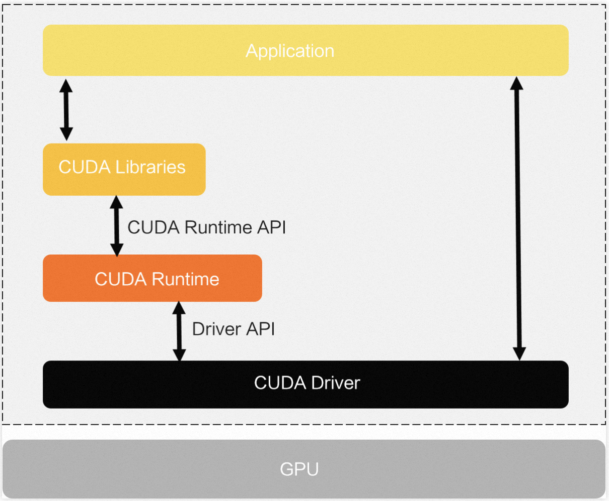
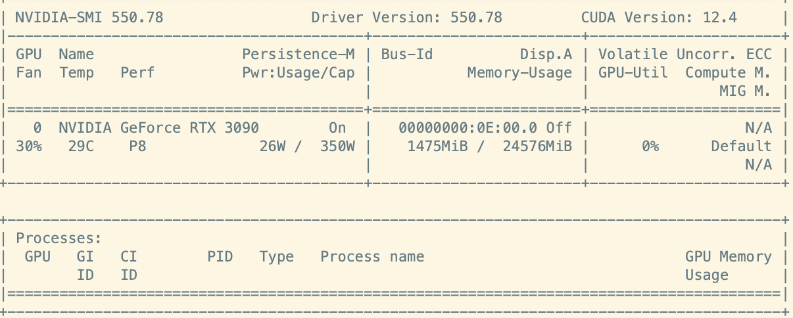
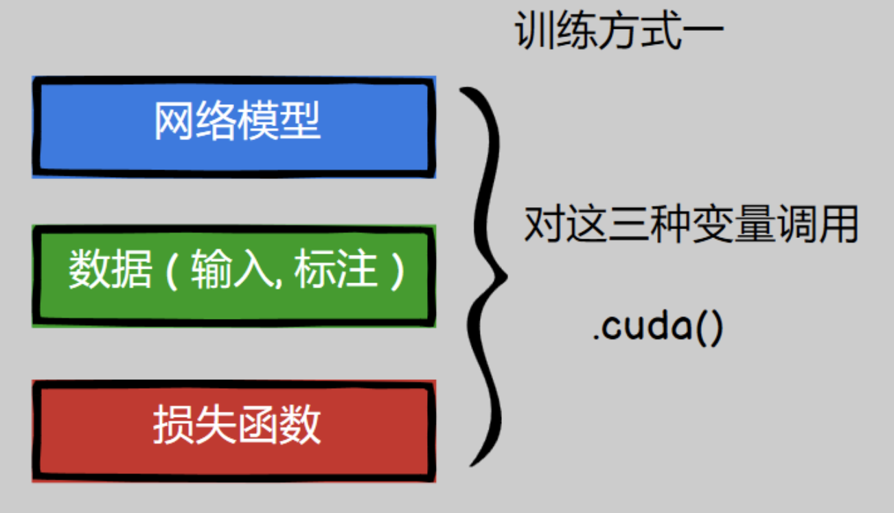

pytorch使用GPU训练模型
在深度学习中，使用GPU进行训练模型是必不可少。使用GPU训练模型的主要原因是GPU的并行处理能力和高吞吐量，主流的深度学习框架如Tensorflow、pytorch等都对GPU进行了优化。
CUDA
CUDA（Compute Unified Device Architecture）是由NVIDIA开发的用于并行计算的平台和编程模型。CUDA旨在利用NVIDIA GPU（图形处理单元）的强大计算能力来加速各种科学计算、数值模拟和深度学习任务。
CUDA的软件堆栈由驱动层、运行时层和函数库层构成。CUDA软件堆栈中涉及的API包括驱动层API和运行时层API。
CUDA是显卡厂商NVIDIA在2007年推出的并行计算平台和编程模型。CUDA利用图形处理器GPU（Graphics Processing Unit），可显著提高计算性能。
下图展示CUDA的架构体系。CUDA软件堆栈中的驱动层API和运行时层API的区别如下。
- 驱动层API（Driver API）：功能较完整，但是使用复杂。
- 运行时API（CUDA Runtime API）：封装了部分驱动的API，将某些驱动初始化操作隐藏，使用方便。
CUDA的Driver API由NVIDIA Driver包提供，而CUDA Library和CUDA Runtime由CUDA Toolkit包提供。

CUDA的作用和特点:
- 「GPU并行计算」： CUDA使GPU能够执行并行计算任务，从而大幅提高了计算性能。GPU由许多小型处理单元组成，每个处理单元都能够执行多个线程，这意味着GPU可以同时处理大量的计算任务。
- 「CUDA编程模型」： CUDA提供了一种编程模型，允许开发人员编写C/C++代码，利用GPU的并行性来执行任务。开发人员可以编写称为"核函数"（kernel）的代码，这些核函数在GPU上并行执行。CUDA编程模型还提供了一组API（应用程序接口）来管理GPU内存、控制GPU设备和调度核函数的执行。
- 「并行计算应用」：
CUDA广泛用于各种领域的科学计算和高性能计算应用，包括：
- 「数值模拟」：CUDA可用于模拟物理现象、天气模型、流体力学等领域的数值模拟。
- 「深度学习」：深度学习框架如TensorFlow和PyTorch都支持CUDA，可用于训练和推理深度神经网络，加速图像识别、自然语言处理等任务。
- 「分子动力学」：用于模拟分子之间相互作用，有助于药物设计和材料科学研究。
- 「地球科学」：用于地震模拟、气象学、地球物理学等领域的大规模数值模拟。
- 「NVIDIA GPU支持」： CUDA仅适用于NVIDIA GPU。不同版本的CUDA通常与特定型号的NVIDIA GPU兼容，因此需要确保你的GPU支持所选版本的CUDA。
- 「CUDA工具和库」： NVIDIA提供了一套用于CUDA开发的工具和库，包括CUDA Toolkit、cuDNN（CUDA深度神经网络库）、cuBLAS（CUDA基础线性代数库）等。这些工具和库简化了CUDA应用程序的开发和优化过程。
cuDNN
cuDNN（CUDA Deep Neural Network Library）是由NVIDIA开发的用于深度学习的加速库。cuDNN旨在优化神经网络的前向传播和反向传播过程，以利用NVIDIA GPU的并行计算能力，从而加速深度学习模型的训练和推理。
cuDNN的作用特点：
- 「深度学习加速」： cuDNN是专门为深度学习任务而设计的，旨在加速神经网络的训练和推理。它提供了一系列高度优化的算法和函数，用于执行神经网络层的前向传播、反向传播和权重更新。
- 「GPU加速」： cuDNN充分利用NVIDIA GPU的并行计算能力，以高效地执行深度学习操作。这使得训练深度神经网络更快速，尤其是对于大型模型和大规模数据集。
- 「深度学习框架支持」： cuDNN被广泛用于多个深度学习框架，包括TensorFlow、PyTorch、Caffe、MXNet等。这些框架通过cuDNN来加速模型的训练和推理过程，使得深度学习研究和开发更加高效。
- 「提高性能」： cuDNN通过使用高度优化的卷积和池化算法、自动混合精度计算、内存管理和多GPU支持等技术，显著提高了深度学习任务的性能。这些优化可以加速卷积神经网络（CNN）、循环神经网络（RNN）、生成对抗网络（GAN）等各种类型的神经网络。
- 「版本兼容性」： cuDNN的不同版本与NVIDIA GPU架构和深度学习框架的版本兼容。因此，为了获得最佳性能，你需要选择适用于你的GPU型号和深度学习框架版本的cuDNN版本。
- 「免费使用」： cuDNN是免费的，可以在NVIDIA的官方网站上下载和使用。
Pytorch
PyTorch 是一个开源的深度学习框架，由Facebook的人工智能研究团队开发和维护。它是一个非常流行的深度学习框架，用于构建和训练神经网络模型。
pytorch的作用和特点:
- 「动态计算图」： PyTorch 采用动态计算图（Dynamic Computational Graph）的方式来定义和执行神经网络。这意味着你可以像编写常规Python代码一样编写神经网络，同时保留了计算图的优势，使模型的构建和调试更加直观和灵活。
- 「灵活性」： PyTorch 提供了丰富的张量操作，以及各种优化工具和模块，可以轻松构建各种类型的深度学习模型，包括卷积神经网络（CNN）、循环神经网络（RNN）、生成对抗网络（GAN）等。它还支持自定义神经网络层和损失函数，允许你创建高度定制的模型。
- 「GPU加速」： PyTorch天然支持GPU加速，你可以在GPU上训练和执行神经网络，大幅提高了计算性能。PyTorch的GPU张量操作与CPU张量操作非常相似，使得将计算从CPU迁移到GPU变得相对容易。
- 「动态调试」： 由于采用动态计算图，PyTorch允许你在模型构建和训练过程中轻松进行动态调试，检查梯度、查看中间变量等。这对于理解和诊断模型行为非常有帮助。
- 「丰富的生态系统」： PyTorch拥有庞大的用户社区，有许多开源项目、库和工具，可以扩展其功能。这些包括模型部署工具、迁移学习库、自然语言处理工具和计算机视觉工具，以及与其他深度学习框架的集成。
- 「深度学习研究和教育」： PyTorch在深度学习研究和教育中非常流行，因为它易于学习、易于使用，并提供了丰富的教程和文档资源。它还被许多大学和研究机构用于深度学习课程和研究项目。
- 「跨平台支持」： PyTorch支持多种操作系统，包括Linux、macOS和Windows，以及多种编程语言接口，如Python、C++等。这使得它适用于各种应用场景。
CUDA、cuDNN、Pytorch的关系
CUDA、cuDNN 和 PyTorch 是三个不同但相关的组件，它们之间存在一些依赖关系，
- 「CUDA（Compute Unified Device Architecture）」:
- 「CUDA是GPU并行计算平台」：CUDA 是由 NVIDIA 开发的用于并行计算的平台和编程模型。它允许开发人员利用 NVIDIA GPU 的强大计算能力来加速各种科学计算、数值模拟和深度学习任务。
- 「PyTorch依赖CUDA」：PyTorch 使用 CUDA 来加速神经网络的训练和推理。在 PyTorch 中，张量（Tensor）可以在 CPU 或 GPU 上进行计算。如果你想在 GPU 上训练神经网络，你需要确保 CUDA 已经正确安装并配置。
- 「版本兼容性」：不同版本的 PyTorch 可能需要特定版本的 CUDA。你需要根据所使用的 PyTorch 版本来选择合适的 CUDA 版本，以确保兼容性。
- 「cuDNN（CUDA Deep Neural Network Library）」:
- 「cuDNN用于深度学习加速」：cuDNN 是 NVIDIA 开发的专门用于深度学习的加速库。它提供了高度优化的卷积和其他深度神经网络层的操作，以提高深度学习模型的性能。
- 「PyTorch依赖cuDNN」：PyTorch 使用 cuDNN 来执行深度学习操作，尤其是在卷积神经网络（CNN）中。cuDNN 提供了高性能的卷积操作，使 PyTorch 能够在 GPU 上高效地进行前向传播和反向传播。
- 「版本兼容性」：不同版本的 PyTorch 需要特定版本的 cuDNN。你需要确保所使用的 cuDNN 版本与 PyTorch 版本兼容。
- 「PyTorch」:
- 「PyTorch是深度学习框架」：PyTorch 是一个开源的深度学习框架，用于构建、训练和部署神经网络模型。它提供了张量操作、自动求导、优化器、损失函数等工具，使深度学习任务更加便捷。
- 「PyTorch依赖CUDA和cuDNN」：PyTorch 可以在 CPU 或 GPU 上运行，但为了获得最佳性能，特别是在大规模深度学习任务中，你通常会将 PyTorch 配置为在 GPU 上运行。这就需要确保 CUDA 和 cuDNN 已正确安装和配置。
查看CUDA
1 | |
输出:
1 | |
torch.cuda.is_available() 为True 说明CUDA是可用的，如果为False 就要检查pytorch的版本与CUDA的版本是否兼容一致。
torch.cuda.get_arch_list() 返回的是CUDA 架构列表。也就是说CUDA能支持的GPU的架构，不同版本的CUDA支持的GPU是不一样的，所以一定要根据GPU的型号/架构来选择要安装的CUDA版本.
如果cuda版本和GPU兼容，则torch.zeros(1).cuda()
在GPU上运算就会成功，否则就会报错。
如果安装了GPU显卡驱动：在命令行执行以下命令
1 | |

从上图可以知道安装的驱动版本为550.78，驱动API版本为12.4，表示该驱动最高支持CUDA运行时API版本为12.4。显卡是GeForce RTX 3090,24G显存。
根据上述信息，从nvidia的网站上就可以找到对应的CUDA版本。
PyTorch的安装
在pytorch的官方网站上可以找到pytorch的安装说明。如果需要安装其他版本pytorch和对应的cuda版本，可以在这里找到。从这个页面找到对应的pytorch版本，并选择相应的系统，执行对应的命令即可。
如需要安装cuda=11.6 pytorch=1.12.0 torchvision=0.13.0 torchaudio=0.12.0就可以执行如下命令进行安装
1 | |
关于GPU架构和CUDA算力的关系,可以查看这篇文章
pytorch在GPU上训练的方法
方法一 .cuda()
我们可以通过对网络模型，数据，损失函数这三种变量调用 .cuda() 来在GPU上进行训练.

比如:
1 | |
方法二 .to(device)
指定训练设备:
1 | |
使用GPU训练
1 | |
Q&A
CUDA error: no kernel image is available for execution on the device
当前GPU的算力与当前版本的Pytorch依赖的CUDA算力不匹配。
解决：需要根据显卡的cuda版本，重新安装pytorch的版本.
Expected all tensors to be on the same device, but found at least two devices, cuda:0 and cpu! (when checking argument for argument index in method wrapper__index_select)
原因：参与运算的两个或多个变量，有的在CPU上，有的在GPU上
解决方案: 先找到报错的行，看看计算时都用到哪些变量或者数据，然后在调试模式下使用.is_cuda这个属性去查看到底哪些是在GPU上，哪些是在CPU上，然后把它们统一都放在CPU，或者统一放在GPU上就可以。如果增加了变量，需要将新增加的变量也搬到GPU上去。